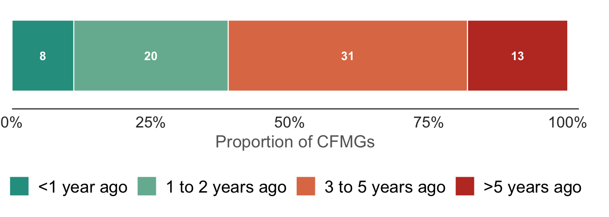
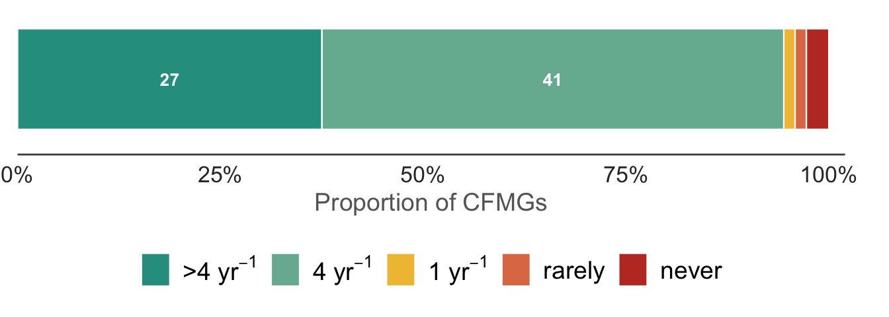
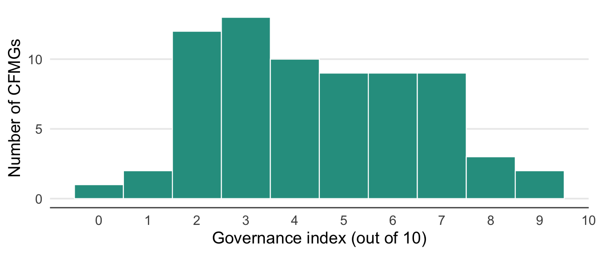
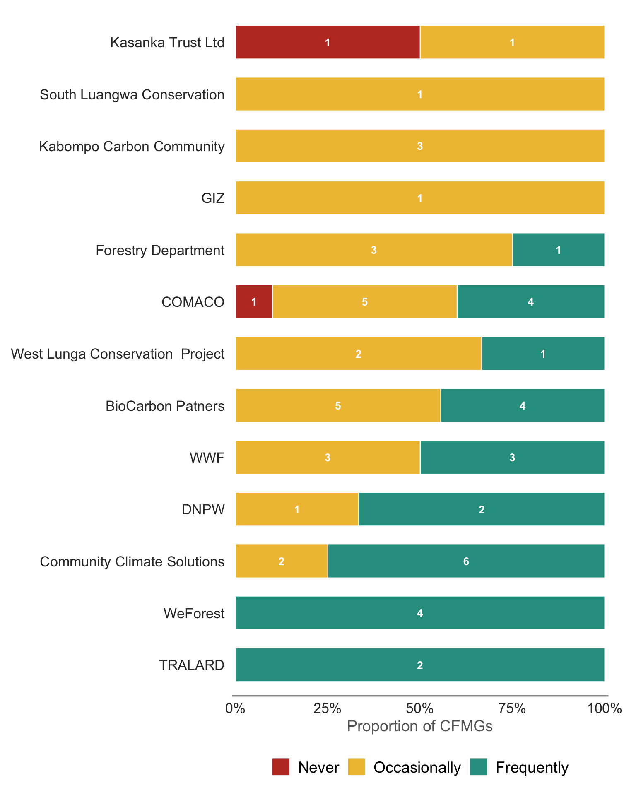
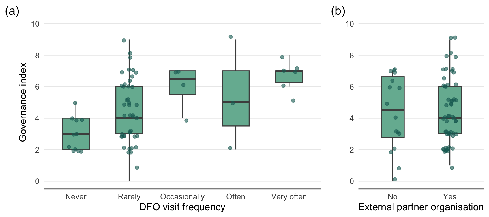
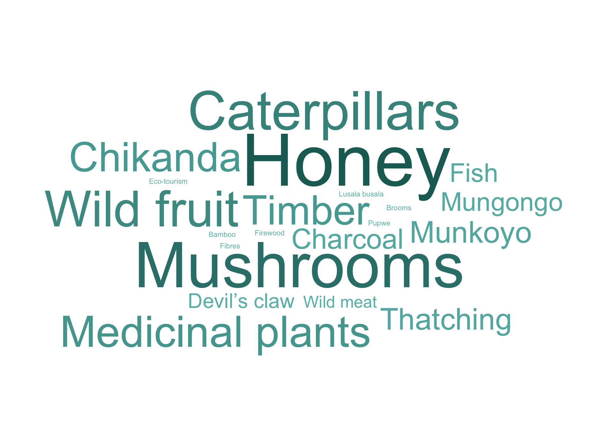

| CFMG legal processes | |||||||
| Values represent the % of CFMGs with each legal document by province. n = 75 CFMGs. | |||||||
| province | CFMG recongnition | CF agreement | Management plan | Registration certificate | User-rights permit | Bylaws & constitution | Benefit sharing agreement |
|---|---|---|---|---|---|---|---|
| Central | 91% | 82% | 82% | 55% | 82% | 91% | 82% |
| Eastern | 83% | 75% | 67% | 8% | 50% | 67% | 67% |
| Lusaka | 100% | 100% | 100% | 100% | 100% | 100% | 100% |
| Muchinga | 93% | 93% | 86% | 57% | 71% | 93% | 93% |
| North-Western | 100% | 100% | 80% | 60% | 70% | 90% | 60% |
| Northern | 100% | 100% | 91% | 91% | 82% | 91% | 91% |
| Southern | 100% | 100% | 100% | 50% | 75% | 100% | 100% |
| Western | 100% | 83% | 83% | 67% | 83% | 100% | 100% |
Governance
Summary
The implementation of CFM processes is patchy. The legal processes required for establishment of a CF are mostly complete across our sample, but later processes such as the registration certificate, forest-use permits and benefit-sharing agreement have not been completed for a substantial number of CFs. While most CFMGs have held elections, have term-limits for executive officers and hold meetings with reasonable frequency, a large proportion have not opened a bank account, do not have a receipt book and have not completed annual financial and technical reports. Most CFMGs are overdue elections and hence are not compliant with their Bylaws & Constitutions. This is worrying as, in some cases, it may reflect an attempt by CFMG executives to retain control for personal benefit. Business processes are even less well implemented. Many do not have a business plan, annual budgets or workplans. Many also do not have defined user groups or issue permits. Most CFMGs are only rarely visited by DFOs or other district forestry staff, but most are supported by conservation NGOs or carbon trading enterprises, who do visit more frequently. Interest in expanding the CF, an indicator of satisfaction with CFM, was highest among CFMG executives and lowest among community youth, a difference that was significant. Among individual interview respondents, NGO representatives indicated they would like to expand the CF significantly more often than traditional leaders (usually headmen or headwomen) and community members. For those CFMGs that recognised forest user groups, these user-groups harvested a very wide variety of resources, but honey and mushrooms were particularly frequently mentioned.
Introduction
In this chapter, we consider questions concerning the governance and management of CFMGs. As our questions pertain to the running of the CFMGs, our analysis focuses on the responses of the CFMG executives. However, the responses from other FGDs and from the individual interviews are included for comparison where appropriate.
CFMG legal processes
We asked CFMG executives what required legal processes had been completed, including the recognition letter, forest management agreement, forest management plan, community forest registration certificate, forest user-rights permit, CFMG bylaws & constitution, and benefit sharing agreement (Table 1).
Lusaka Province was the only province in which all processes had been completed across all CFMGs, while Eastern Province had the highest proportion of incomplete legal processes. Overall, completion of legal processes was quite patchy. Some processes, such as the Recognition letter, CF Agreement, Management Plan and Bylaws & Constitution, seem to have been completed for most CFMGs, but the Registration Certificate, User-rights Permit and Benefit-sharing Agreement were less often completed. This assessment is based on the responses of the CFMG executives, who should be well informed. Nevertheless, it may be that more processes have been completed, especially where the CFMG is being supported by external partners, such as NGOs or carbon trading agencies.
CFMG governance processes
Through the survey, we asked CFMG executives what governance processes were being implemented, such as holding CFMG elections, issuing permits and annual reporting (Table 2).
| CFMG governance processes | ||||||||
| Values represent the % of CFMGs completing/conducting each governance process by province. n = 75 CFMGs. | ||||||||
| province | CFMG elections | CFMG term-limits | Receipt book | Bank acc | Permits issued | Financial reporting | Annual reporting | HFOs appointed |
|---|---|---|---|---|---|---|---|---|
| Central | 100% | 55% | 9% | 0% | 0% | 0% | 50% | 100% |
| Eastern | 83% | 73% | 75% | 83% | 17% | 82% | 75% | 83% |
| Lusaka | 100% | 33% | 33% | 83% | 0% | 67% | 83% | 100% |
| Muchinga | 100% | 75% | 55% | 36% | 33% | 29% | 64% | 91% |
| North-Western | 100% | 88% | 50% | 10% | 30% | 40% | 70% | 75% |
| Northern | 100% | 73% | 29% | 80% | 0% | 55% | 70% | 91% |
| Southern | 75% | 25% | 25% | 0% | 0% | 0% | 50% | 100% |
| Western | 100% | 86% | 0% | 0% | 0% | 57% | 100% | 86% |
While most CFMGs have held elections, have term limits for executive officers and employ honorary forest officers (HFOs), other governance processes were not as consistently implemented. Most CFMGs have not opened bank accounts, do not maintain a receipt book, or issue forest-use permits. Financial and annual reporting to community members was also apparently rarely implemented.
It appears that most CFMGs have not held elections since they were formed, up to five years ago (Figure 1).

Forty-three out of 75 CFMGs have not held elections for over 3 yrs, although term limits for executive officers are typically 2-3 years (Figure 2). This indicates that most CFMGs are not complying with their Bylaws & Constitutions.

In contrast, most CFMGs do appear to be holding meetings regularly (Figure 3). However, there is a small proportion of CFMGs that holds meetings rarely or never.

CFMG business processes
As with the legal processes, we asked CFMG executives about the state of their business processes. Specifically, we asked if they had developed annual workplans and budgets, and whether these plans were being implemented. We also asked if they had developed a business plan and if any forest user groups had been established (Table 3).
| Business processes in the management of CFMGs | |||||
| Values represent the % of CFMGs with each business process in place by province. n = 75 CFMGs. | |||||
| province | CFMG workplan | CFMG budget | Implementing plan | Business plan | User groups |
|---|---|---|---|---|---|
| Central | 62% | 27% | 100% | 27% | 82% |
| Eastern | — | 83% | 92% | 58% | 50% |
| Lusaka | 67% | 67% | 67% | 17% | 33% |
| Muchinga | 100% | 43% | 100% | 71% | 86% |
| North-Western | 30% | 20% | 60% | 20% | 60% |
| Northern | — | 73% | 100% | 45% | 73% |
| Southern | 100% | 75% | 100% | 0% | 50% |
| Western | 67% | 0% | 100% | 33% | 100% |
As is evident from the table, these business management processes were even more erratically completed than the legal and governance processes. As substantial proportion of CFMGs did not have workplans, budgets or a business plan. More surprising, many did not have any recognised user groups, which is critical to managing forest resources.
Governance index
To summarise CFMG governance performance, we constructed a governance index (0–10) based on the presence or absence of ten features reported by CFMG executives: receipt book, bank account, financial reporting, annual reporting, issuing permits, HFOs appointed, workplan, budget, business plan, and term limits. We then tested whether two aspects of external support — the frequency of DFO visits and the presence of a partner organisation — were associated with higher governance scores (Figure 4).

External support
All CFMGs are supported by FD, which has a statutory duty to implement the CFM policy and regulations. Nonetheless, the frequency of visits by DFOs or other district forestry staff varied widely and in many cases they rarely or never visited.
Many CFMGs also operate in partnership with an NGO, such as a conservation organisation, or a private enterprise, such as a carbon trader (Figure 6).
The table below (Table 4) lists the partners organisations and the number of CFMGs they support. It is important to note that this list does not cover all organisations supporting CFMGs or all the CFMGs that are supported by a named organisation, but only those in our sample of 75 CFMGs. The FD is named as a partner in situations where the district FD office was responsible for setting up the CFMG and other partners are not involved.
| Partner organisations | |
| n = number of CFMGs partnered with each organisation. | |
| CFMG partner | n |
|---|---|
| BioCarbon Patners | 9 |
| COMACO | 11 |
| Community Climate Solutions | 8 |
| DNPW | 3 |
| Forestry Department | 4 |
| GIZ | 1 |
| Kabompo Carbon Community | 3 |
| Kasanka Trust Ltd | 2 |
| South Luangwa Conservation | 1 |
| TRALARD | 2 |
| WWF | 6 |
| WeForest | 4 |
| West Lunga Conservation Project | 3 |
| — | 18 |
The figure below (Figure 7) indicates the frequency of visits to CFMGs by partner organisations. The respondents did not state a specified number of visits per year, but from the context we assume the frequently indicates monthly or every other month, occasionally indicates 1-4 times a year, while never means that they had not visited in over a year.

We modelled the governance index against DFO visit frequency and presence of an external partner to determine which aspects of external support are associated with higher governance scores (Table 5, Figure 8).
| Predictors of CFMG governance index | |||
| Province random intercept variance = 0.599; residual variance = 3.182. Marginal R<U+00B2> = 0.204; conditional R<U+00B2> = 0.33. n = 67. | |||
| Factor | Estimate | SE | P value |
|---|---|---|---|
| Intercept | 2.418 | 0.693 | 0.0011 |
| DFO visit frequency (1<U+2013>5) | 0.909 | 0.216 | 0.0001 |
| External partner (yes) | 0.054 | 0.542 | 0.9210 |

Interest in expanding the community forest
Next we asked interviewees whether they were interested in expanding the area of their CF. A “yes” answer can be taken as an endorsement of CFM. On the other hand, a negative response might reflect dissatisfaction with the CFMG management or the benefits CFM has brought. However, a negative response could also reflect other reasons, such as a lack of sufficient additional forest area in the community. We compare the responses from different FGD groups.
As can be seen in Figure 9, the CFMG executives were enthusiastic to expand the CF in most cases. However, among the community this number dropped to 41 for female groups, 37 for male groups and to just 23 for youth groups.
The difference in attitudes between CFMG executive and youth FGD groups was significant, but the pairwise comparisons among other FGD groups were not significant. These results might suggest that CFM is not benefiting youth to the same degree as other groups, or perhaps that they bear higher opportunity costs. Our analyses in other sections will help elucidate the reasons.
| Interest in expanding the community forest <U+2014> FGD groups | |||
| Estimates are log-odds; reference level = Executive FGD. CFMG random intercept variance = 0.445. Marginal R<U+00B2> = 0.102; conditional R<U+00B2> = 0.209. n = 247. | |||
| Factor | Estimate | SE | P value |
|---|---|---|---|
| Intercept (Executive FGD) | 0.105 | 0.439 | 0.8112 |
| Female FGD | 0.434 | 0.387 | 0.2621 |
| Male FGD | 0.714 | 0.394 | 0.0700 |
| Youth FGD | 1.250 | 0.419 | 0.0028 |
| Governance index | −0.225 | 0.079 | 0.0044 |
| Pairwise comparisons <U+2014> FGD type | ||||
| Estimates are log-odds differences on the emmeans scale. Tukey-adjusted p-values. | ||||
| Contrast | Estimate | SE | z ratio | P value |
|---|---|---|---|---|
| cfmg_executive - cfmg_female | −0.434 | 0.387 | −1.121 | 0.6763 |
| cfmg_executive - cfmg_male | −0.714 | 0.394 | −1.812 | 0.2677 |
| cfmg_executive - cfmg_youth | −1.250 | 0.419 | −2.986 | 0.0150 |
| cfmg_female - cfmg_male | −0.280 | 0.392 | −0.714 | 0.8915 |
| cfmg_female - cfmg_youth | −0.817 | 0.415 | −1.969 | 0.1996 |
| cfmg_male - cfmg_youth | −0.537 | 0.420 | −1.277 | 0.5778 |
We also compared the responses from the individual interviewees (Table 8). The traditional leaders and community members more often reported that they did not want to expand the CF than other groups. However, the only pairwise comparisons that were significant were NGO representative with traditional leader and NGO representative with community member.
| Interest in expanding the community forest area by interviewee role | ||||
| Values represent the % of respondents in each response category. n = the total number of interview responses. | ||||
| Role | n | Yes | No | Don't know |
|---|---|---|---|---|
| CFMG executive member | 62 | 66% | 27% | 6% |
| Community member | 30 | 37% | 53% | 10% |
| Traditional leader | 75 | 52% | 43% | 5% |
| District Forestry Officer | 56 | 64% | 25% | 11% |
| NGO representative | 32 | 81% | 19% | 0% |
| Interest in expanding the community forest <U+2014> individual interviewees | |||
| Estimates are log-odds; reference level = Community member. Province variance = 0.119; CFMG:province variance = 1.046. Marginal R<U+00B2> = 0.118; conditional R<U+00B2> = 0.349. n = 238. | |||
| Factor | Estimate | SE | P value |
|---|---|---|---|
| Intercept (Community member) | −0.788 | 0.978 | 0.4203 |
| CFMG executive member | −1.295 | 0.601 | 0.0313 |
| Traditional leader | −0.548 | 0.587 | 0.3504 |
| District Forestry Officer | −1.448 | 0.633 | 0.0221 |
| NGO representative | −2.052 | 0.736 | 0.0053 |
| Gender (male) | 0.915 | 0.494 | 0.0637 |
| Age | 0.005 | 0.014 | 0.7105 |
| Pairwise comparisons <U+2014> interviewee role | ||||
| Estimates are log-odds differences on the emmeans scale. Tukey-adjusted p-values. | ||||
| Contrast | Estimate | SE | z ratio | P value |
|---|---|---|---|---|
| cfmg_member - cfmg_exec_member | 1.295 | 0.601 | 2.153 | 0.1977 |
| cfmg_member - trad_leader | 0.548 | 0.587 | 0.934 | 0.8838 |
| cfmg_member - dfo | 1.448 | 0.633 | 2.289 | 0.1483 |
| cfmg_member - NGO_rep | 2.052 | 0.736 | 2.788 | 0.0423 |
| cfmg_exec_member - trad_leader | −0.747 | 0.509 | −1.467 | 0.5841 |
| cfmg_exec_member - dfo | 0.153 | 0.535 | 0.287 | 0.9985 |
| cfmg_exec_member - NGO_rep | 0.758 | 0.657 | 1.153 | 0.7780 |
| trad_leader - dfo | 0.900 | 0.536 | 1.679 | 0.4471 |
| trad_leader - NGO_rep | 1.504 | 0.687 | 2.190 | 0.1834 |
| dfo - NGO_rep | 0.604 | 0.638 | 0.948 | 0.8781 |
Defined user groups
Among those CFMGs that had recognised user groups, they were involved in managing the following resources (Figure 10).

Evidently, people are harvesting a wide variety of products from CFs, although honey and mushrooms appear especially important. It is not clear from the responses, if these user-groups are defined within the CF management plan or whether these are informal groups that are nevertheless recognised by the CFMG.
Discussion
In this chapter we assessed CFMG governance across five domains: legal processes, governance processes, business processes, external support, and community buy-in as reflected by interest in expanding the CF and the activities of user-groups.
The most consistent pattern across all three process domains — legal, governance, and business — is that foundational steps have been taken by most CFMGs, but the more demanding, ongoing requirements are often incomplete. Early legal steps, such as obtaining a recognition letter and signing a forest management agreement, have been completed by the large majority of CFMGs, but later and more involved documents — the registration certificate, forest-use permit, and benefit-sharing agreement — are absent in a substantial proportion. Similarly with respect to governance processes, most CFMGs have held elections and have term limits in place, but basic management actions — opening bank accounts, operating receipt books, and financial and annual reporting — are frequently missing. Business processes are the weakest area of all. Annual workplans, budgets and business plans are rarely in place. Without these planning and financial management tools, CFMGs cannot sustainably manage their resources, are poorly positioned to account for and redistribute income — including carbon payments — and will struggle to demonstrate compliance with the forest management license or to agreements with external partners.
The fact that most CFMGs are overdue for elections is particularly concerning. Timely elections are a basic requirement of the CFMG Bylaws & Constitution, and overdue elections undermine the democratic legitimacy of the CFMG executives and could contribute to the perception of elite capture noted elsewhere in this report. These perceptions may be very valid in some cases. The enumerators noted that while some CFMGs had not held elections because they were no longer active, the CFMG executives of others stated that the CFMG had yet to receive carbon income and they were unwilling to hold elections, because they anticipated personal benefits from being a CFMG executive member once the carbon income started to flow. Still others had received carbon income and were unwilling to give up their positions because they do receive some kind of personal benefit. It is essential that this kind of corruption is stamped out, as it may threaten the legitimacy of CFM in the eyes of the community and potentially undo gains made in SFM and sustainable development. Ensuring that CFMGs run elections on schedule and fairly should be a priority for the FD and for supporting partners.
External support from the FD is insufficient. Most CFMGs are rarely or never visited by DFOs or other district forestry staff, despite the statutory duty of the FD to implement the CFM policy. This gap is partly compensated by conservation NGOs and carbon trading enterprises, many of which visit their partner CFMGs more frequently. However, this support is not universal: a significant proportion of CFMGs in our sample had no external partner. Given the governance deficits identified above, regular external support from CFMG partners for capacity building and oversight is clearly a necessity. The current model, in which CFM is effectively co-governed by the community and the private sector rather than the state, may be adequate for CFMGs with active and capable partners but leaves others without meaningful support.
Interest in expanding the CF is highest among CFMG executives and drops markedly among community members, particularly youth. Among individual interviewees, NGO representatives are significantly more enthusiastic about expansion than traditional leaders or community members. This divergence — consistent with the equity chapter findings — suggests that the CFMG leadership and external partner stakeholders have a more optimistic view of CFM outcomes than the broader community. Although possibly not widespread a the moment, poor governance could lead to increased levels of community dissatisfaction with CFM and, if not addressed, could pose a long-term risk to the legitimacy and sustainability of CFM.
In conclusion, CFMG governance is still maturing. The legal framework for CFM is largely in place, but institutional and business management processes lag behind. Strengthening financial management, ensuring timely elections, expanding DFO and district forestry staff engagement, and closing the gap between executive and community perspectives on CFM will be essential for CFM to fulfil its potential in Zambia.